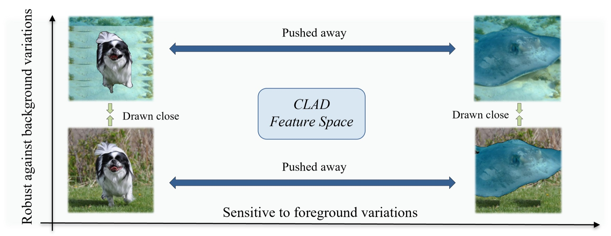
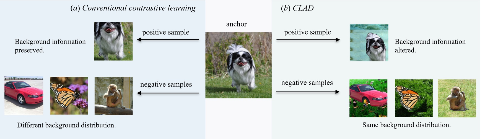
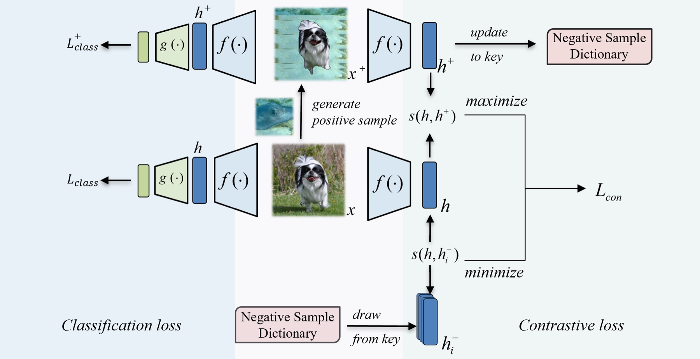
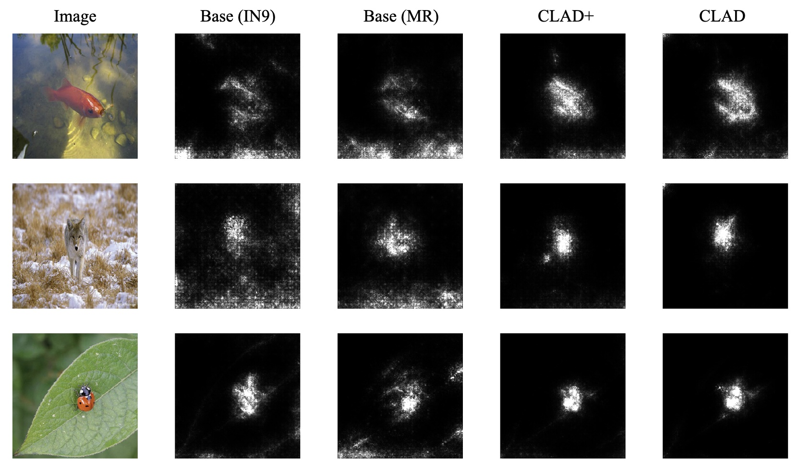

CLAD: Contrastive Learning for Background Debiasing
CNNs learn to cheat — leaning on backgrounds rather than the objects themselves. CLAD fixes this with a targeted contrastive objective, achieving state-of-the-art results on the Background Challenge benchmark.
BMVC 2022 PaperThe Problem: CNNs That Cheat on Backgrounds
Despite achieving superhuman performance on many benchmarks, CNNs don't see images the way humans do. They routinely exploit backgrounds and textures as shortcuts — a wolf classifier that fires because it sees snow, not the animal. This means excellent accuracy on standard test sets can mask a model that will fail catastrophically when the background distribution shifts.
The Background Challenge (ImageNet-9) was designed to expose exactly this: models trained normally show dramatic accuracy drops when objects are placed on completely random backgrounds (MIXED-RAND), even though the foreground hasn't changed at all.

CLAD learns a feature space that stays consistent across background changes while remaining sensitive to foreground object differences.
Method: Background-Debiased Contrastive Pairs
Standard contrastive learning doesn't help here — conventional positive pairs share the same background, so minimising their distance actually reinforces background bias. CLAD flips this logic with a purpose-built sampling strategy:
- Foreground extraction: Use GrabCut (or U²-Net for scalability) to segment the object from its background.
- Positive pairs: Take the same foreground and place it on a different-class background. Same object, different context → model must ignore the background to recognise them as equivalent.
- Negative pairs: Different foreground objects placed on similar-class backgrounds, pulled from a memory-efficient dictionary queue. Same background, different object → model must use foreground to distinguish them.
- Training objective: Combine standard cross-entropy (Lclass) with InfoNCE contrastive loss (Lcon), weighted by λ. CLAD+ optionally adds classification loss on the positive samples too.

Left: conventional contrastive learning preserves background in positive pairs. Right: CLAD's strategy — same foreground, different background for positives; different foreground, same background for negatives.

The full training pipeline: for each batch, positive samples are generated via background swapping, used to update the negative dictionary, and the combined loss is computed over anchor, positive, and negative features.
Results
Evaluated on the Background Challenge (ImageNet-9), CLAD and CLAD+ set a new state of the art — with almost no accuracy trade-off on original, unmodified images.
| Model | ORIGINAL ↑ | ONLY-FG ↑ | MIXED-RAND ↑ | MIXED-SAME ↑ | BG-GAP ↓ |
|---|---|---|---|---|---|
| Base (IN9) | 96.0 | 86.0 | 73.4 | 87.5 | 14.1 |
| Base (MR) | 88.4 | 89.5 | 86.7 | 87.1 | 0.4 |
| MoCo-v2 (BG Swaps) | 95.2 | 87.5 | 85.2 | 89.6 | 4.4 |
| BYOL (BG Random) | 96.1 | 88.3 | 85.2 | 90.2 | 5.0 |
| CLAD (ours) | 95.9 | 93.8 | 87.5 | 90.1 | 2.6 |
| CLAD+ (ours) | 95.6 | 94.6 | 89.3 | 90.5 | 1.2 |
Accuracy (%) on Background Challenge variants. BG-GAP = MIXED-SAME − MIXED-RAND; lower means less background bias.
Models closer to the identity line have lower background bias. CLAD and CLAD+ sit furthest right and closest to the line — high accuracy on both splits.
Analysis
Saliency Maps
SmoothGrad saliency maps make the improvement visually clear. Baseline models (Base-IN9 and Base-MR) highlight background regions — notably the snow behind a wolf. CLAD and CLAD+ focus tightly on the animal itself, even in cluttered scenes.

SmoothGrad saliency maps across four models. CLAD+ and CLAD produce cleaner, foreground-focused maps. The wolf/snow example (row 2) is a classic CNN background bias failure — only CLAD correctly attends to the animal.
Feature & Decision Consistency
CLAD+ achieves 92.0% feature similarity and 96.9% decision consistency between original and background-swapped image pairs — meaning the model extracts nearly the same features regardless of what's behind the object. Baselines sit 10–17 points lower on both metrics.
Contrastive Loss Weight (λ) Ablation

As λ increases from 0 to 1, MIXED-RAND accuracy improves while ORIGINAL accuracy stays flat. Beyond λ=1, the contrastive term dominates and performance on clean images degrades — the sweet spot is λ=1.
Generalising to Texture Bias
CLAD's framework is not specific to background. By swapping the contrastive construction to use texture (via AdaIN style transfer) instead of background, the same approach reduces texture bias — improving accuracy on Stylized ImageNet-9 and ImageNet-9-Sketch by ~20% over the standard baseline, with no drop on original images. Background debiasing alone does not fully transfer to texture, and vice versa — each bias requires its own targeted contrastive pairs.
Takeaways
- Contrastive pair design matters. Simply adding contrastive loss doesn't help — you need pairs where the spurious feature is the only thing that varies.
- The negative dictionary is key. It provides scalable, hard negatives that share background with the anchor, without requiring expensive per-sample generation.
- No accuracy trade-off. Unlike augmentation-only baselines (e.g. Base-MR, which drops 7.6% on ORIGINAL to gain robustness), CLAD achieves both.
- Generalises beyond background. The same contrastive recipe reduces texture bias when applied to shape/texture pairs — suggesting a general framework for targeted debiasing.